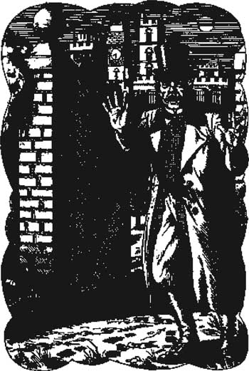

Listen to Part 1:
3

Vấn đề
Holmes và tôi rất ngạc nhiên. Đây đúng là một câu chuyện rất kỳ lạ. Tôi không tin rằng Sir Charles Baskerville bị một con chó đen khổng lồ giết chết. Nhưng tôi muốn biết sự thật.
‘Ai là người khác nhìn thấy dấu chân này?’ Sherlock Holmes hỏi. Đôi mắt sáng rực của ông ấy loé lên và ông ấy nghiêng người về phía trước trên ghế.
‘Không còn ai khác nhìn thấy dấu chân cả,’ Tiến sĩ Mortimer trả lời. ‘Đêm đó trời mưa lớn. Đến sáng thì dấu chân đã bị xoá sạch.’
‘Dấu chân lớn như nào? Chúng có lớn hơn dấu chân của một con chó chăn cừu không?’
‘Vâng, thưa ông Holmes, lớn hơn nhiều. Đó không phải là dấu chân của một con chó bình thường.’
‘Ngoài ra, ông nói là Sir Charles đã bỏ chạy khỏi con chó này đúng không? Ông biết được điều đó bằng cách nào?’ Holmes hỏi.
‘Mặt đất mềm,’ Tiến sĩ Mortimer trả lời. ‘Tôi thấy dấu chân của Sir Charles bên ngoài Baskerville Hall. Dấu chân của ông ấy khép sát vào nhau khi ông ấy bước đi dọc theo một lối mòn ở rìa đồng cỏ. Sau đó ông ấy dừng lại và đứng chờ bên một cánh cổng gỗ. Sau đó dấu chân của ông ấy thay đổi – chúng trở nên dang rộng và sâu. Tôi chắc chắn rằng ông ấy đã bắt đầu chạy. Ông ấy chạy về phía căn nhà. Tôi tin rằng có thứ gì đó từ trên đồng cỏ đi đến. Tôi tin rằng ông ấy đã nhìn thấy Ác Khuyển của dòng họ Baskerville.’
‘Vâng, vâng,’ Holmes nói, ‘nhưng ông biết được rằng Sir Charles đã đứng đợi bên cánh cổng gỗ đó như nào?’
Listen to Part 2:
‘Vì ông ấy đã hút xì gà,’ Tiến sĩ Mortimer nói. ‘Tôi đã nhìn thấy tro xì gà màu trắng trên mặt đất.’
‘Tốt,’ Holmes nói, ‘tốt – ông là một thám tử.’
‘Cảm ơn ông,’ Tiến sĩ Mortimer nói, cùng một nụ cười.
‘Nhưng ông tin rằng Sir Charles đã bị một con chó khổng lồ giết chết sao?’
‘Tôi biết ông ấy đã bỏ chạy khỏi thứ gì đó,’ Tiến sĩ Mortimer nói. ‘Tôi biết tôi đã nhìn thấy những dấu chân kỳ lạ của một con chó khổng lồ. Nhưng . . .’ Ông ấy nhìn vào đồng hồ. ‘. . . tôi có hẹn với Sir Henry Baskerville ở Ga xe lửa Waterloo trong vòng một tiếng nữa. Sir Henry là cháu trai của Sir Charles. Anh ấy đến từ Canada. Sir Charles không có con, nên Sir Henry giờ là chủ nhân của Baskerville Hall. Và giờ tôi gặp vấn đề rồi.’
‘Vấn đề của ông là gì?’ Holmes hỏi.
‘Tôi tin rằng Sir Henry đang gặp nguy hiểm,’ Tiến sĩ Mortimer nói. ‘Liệu có an toàn khi đưa anh ấy đến Baskerville Hall không?’
‘Tôi phải suy nghĩ đã,’ Sherlock Holmes nói. ‘Hãy ở lại London đêm nay. Hãy đến gặp tôi một lần nữa vào sáng mai. Vui lòng mang theo Sir Henry.’
‘Tôi sẽ vậy,’ Tiến sĩ Mortimer nói. Ông ấy đứng dậy. ‘Giờ tôi phải đến gặp Sir Henry ở Ga xe lửa Waterloo. Chúc ông một ngày tốt lành.’
Khi Tiến sĩ Mortimer đã rời đi, Holmes nói với tôi, ‘Chúng ta có vấn đề ở đây rồi, Watson. Có ba câu hỏi. Tội ác là gì? Ai đã gây ra nó? Chúng thực hiện như nào?’
Listen to Part 3:

‘Tôi tin rằng ông ấy đã nhìn thấy Ác Khuyển của dòng họ Baskerville.’
Bảng mục lục
- Trang tiêu đề
- Mục lục
- Ghi chú về câu chuyện này
- Nhân vật trong câu chuyện này
- Chương 1: Thám tử Sherlock Holmes
- Chương 2: Lời nguyền của nhà Baskerville
- Chương 3: Vấn đề
- Chương 4: Huân tước Henry Baskerville
- Chương 5: Đôi ủng bị đánh cắp
- Chương 6: Tòa nhà Baskerville
- Chương 7: Những người Stapleton của dinh thự Merripit
- Chương 8: Báo cáo đầu tiên của Tiến sĩ Watson
- Chương 9: Ánh sáng trên đồng cỏ
- Chương 10: Người đàn ông trên đồng cỏ
- Chương 11: Trang trại High Tor
- Chương 12: Đặt bẫy
- Chương 13: Chó săn nhà Baskerville
- Chương 14: Trở về phố Baker
- Điểm cần lưu ý
- Danh sách tiêu đề tiếng Anh cơ bản
- Trang bản quyền